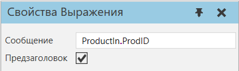
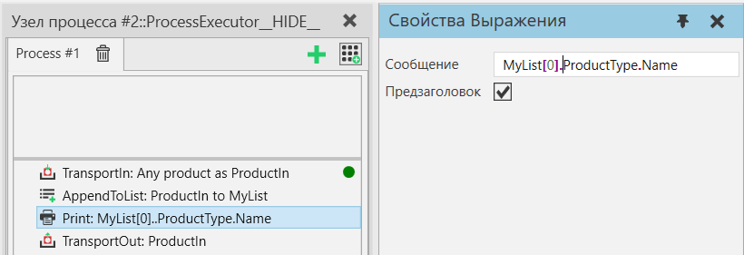
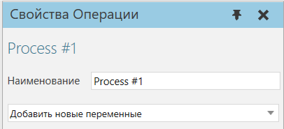

Выражения оператора процесса |
|
При написании выражений для операторов процесса вы можете получить доступ к свойствам объектов динамических компонентов и элементов списков. ДоступВы можете использовать запись через точку (.), чтобы получить значение свойства Продукта, Типа продукта, Компонента или Группы.  Синтаксис
Оператор индексаВы также можете использовать квадратные скобки для доступа к элементу списка.  При написании строк в выражениях используйте двойные кавычки, например: "string".  ДополнительноЧтобы получить доступ к текущему времени симуляции, внутренняя функция SimTime () может быть использована внутри выражений. Поддерживаемые операторыДоступ к свойствам с точечной нотацией и элементам списка со скобками в выражениях поддерживается с помощью следующих операторов: ·Если (If) ·Печать (Print) ·Переключатель Случаев (Switch) ·Ждать Состояния Свойства (WaitPropertyCondition) ·Пока (While) |